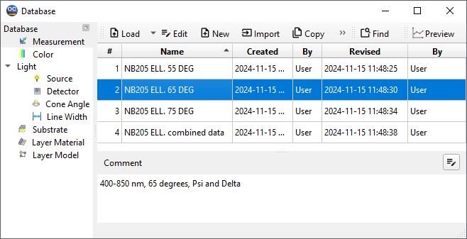

Database Access Dialog
OptiChar provides a unified database access window for accessing all data files in a similar manner. This window allows you to select from four types of data: Measurements, Substrate, Layer Material, and Layer Models. Regardless of the type of data you initially open the window with, you can easily switch to other types by selecting the appropriate tab at the bottom of the window.
Additionally, you can perform an incremental search for a file in the database by simply typing the first few letters of the file name.

In version 14.57, we introduced the instant preview function, which allows any database file to be visualized in a small Preview window. This feature significantly simplifies the process of working with large databases.
The Preview sub-window can be detached from the main database window and positioned anywhere on the screen, providing flexibility in your workspace. It can also be docked to any side of the database window. To do this, simply use a drag-and-drop operation on the caption of the Preview window.
Actions on database files are accessible through the menu bar at the top of the window. The menu items allow you to perform various operations, including loading a file, editing an existing file, creating a new file, making a copy of a file, renaming a file, deleting a file, generating a text output of file contents, and sorting the files in the database in multiple ways.
The commands for Load, Edit, Copy, Rename, Delete, and Output can be applied to a selected file. You can select a file by clicking on it or by navigating through the list using the arrow keys.
Load: This command loads a selected file from the disk into the computer’s memory. See Loading Data Files. In some situations (for example, Measurement data), the same file can be used in different ways.
Note the small arrow to the right of the Load button; it invokes a special popup menu providing access to additional options. These options are also accessible through the right-click menu of the Database window.
Edit: This command can be used to modify a selected file. For more details, refer to:
Important Notes:
 Editing a file in a database does not affect the contents
of the file currently residing in memory; it only affects
the contents of the file stored on the disk. To change the
memory contents, use the Load command. Measurement data and Layer Models can be edited in memory
using the Modify Measurements and Modify Model commands in
the Characterization
menu .
Editing a file in a database does not affect the contents
of the file currently residing in memory; it only affects
the contents of the file stored on the disk. To change the
memory contents, use the Load command. Measurement data and Layer Models can be edited in memory
using the Modify Measurements and Modify Model commands in
the Characterization
menu .New: This menu item allows you to create a new file. When selected, you will be prompted for a new filename and an optional comment (see Creating a New Database **File**). You will then automatically enter Edit mode to modify the contents of the new file. Some data fields are already filled with default values, which should be changed to suit your needs.
Warning: The maximum number of files in each database is 799.Copy: This command allows you to copy a file. This is useful if it is appropriate to modify an existing file for a new purpose. After selecting this command, you will be asked to confirm the copy process or cancel it. Upon confirmation, you will be prompted to enter a new filename and comments, in the same way as for the New command.
Warning: The maximum number of files in each database is 799.Rename: This command allows you to rename a selected file. When selected, a dialog box titled “Rename To” will open, with the name of the selected file highlighted. A second field for the comment associated with the file is also displayed. After changing either of these fields and clicking the OK button, the database will be updated to reflect the new name and/or comment.
Delete: This command allows you to delete any file in a database. You will be prompted to confirm whether you really want to delete the selected file. Upon confirming the deletion, the file will be removed from the database.
Warning: Deleting a file destroys its contents; once
deleted, it cannot be recovered.Output: The output option allows the creation of a text report on the contents of a selected file (see Creating Text Output). You can save this report as an ASCII file (using the Save Output As command) or send it directly to the printer (using the Print command) from the File Menu.
Sort: This command allows you to sort the filenames in a database in different ways. Files can be sorted by the alphabetical order of their names, the names of their creators, or by creation or revision dates. Any sorted category can also be arranged in reverse order. For details, see Setting Sorting Options.
Find: This opens an additional search tool. You can specify a name pattern in order to search for the required file in large databases.
Quit: This command closes the database window.